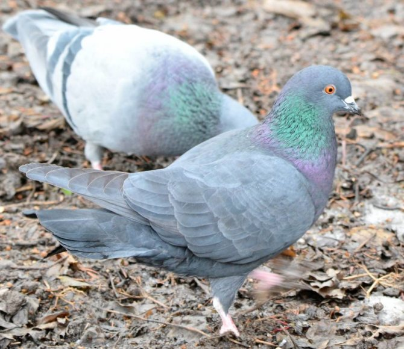

Everyone loves birds, but not everyone knows about their features, interesting facts and so on.On this site you will find a lot of information about birds from different countries!
PIGEON:
A pigeon is a bird that everyone recognizes. They live mainly in Europe. The blue pigeon is the most common type of pigeon in the world!
CROW AND RAVEN:
The crow is a European bird. There is an erroneous opinion that the Raven is the "husband" of the crow, but this is not so The Crow and the Raven are two different birds.
A raven, unlike a crow, can be tamed and trained.
MAGPIE:
The magpie is a bird that is known in Russia. And in truth, most of all mugpies live in Russia.
The nickname of the magpie is "Magpie-white-side"